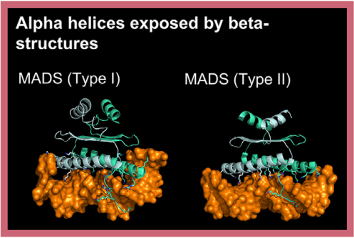

Members of this superclass feature an all-alpha-helical DNA-binding domain (DBD), but unlike HTH domains, basic domains, and other all-alpha-helical DNA-binding domain superclasses,
their DNA-binding helices are exposed by a scaffold of beta-strands. These helices do not insert into either DNA groove; instead, they pack directly against the DNA double helix.
This superclass comprises two classes:
SAND domain factors are represented by ULTRAPETALA genes in plants and VARL genes in green algae. However, sequence-specific DNA binding activity has never been demonstrated for these factors [79, 80].
